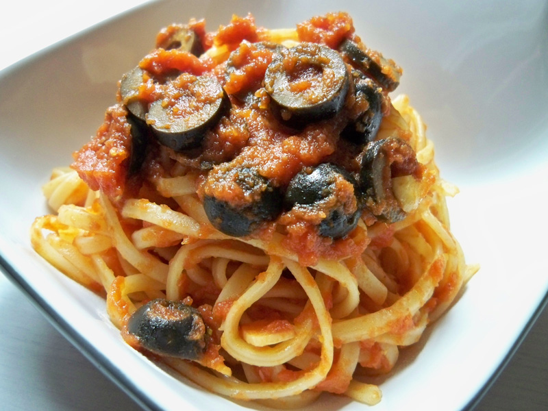
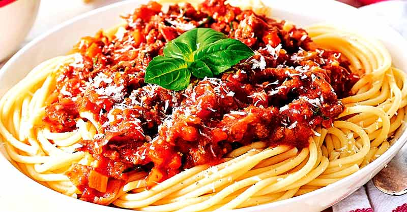

Pasta a la carbonara
- 400 gr. de espagueti
- 1 cda. de aceite de oliva
- 200 gr. de panceta feteada
- 2 dientes de ajo picados
- 3 huevos, 1 yema
- 100 gr. de crema
- 2/3 tazas de queso parmesano, (reservar cantidad extra para servir)
- 2 cdas. de perejil picados
Preparacion
- Hervir los fideos
- Saltear la panceta y agregar el ajo picado
- Colocar en un bowl la crema, los huevos, la yema y el queso parmesano. Mezclar
- Agregar la pasta hirviendo a la sartén, apagar el fuego y agregar la mezcla de huevos junto la panceta con el ajo y el perejil picado
- Servir y espolvorear un poco más de parmesano por encima

Pasta a la Puttanesca
- Tallarines
- 200 g
- Dientes de ajo (2 unidades)
- Anchoas de buena calidad (5 unidades)
- Guindilla roja (1 unidad)
- Alcaparras 40 g
- Aceitunas negras 60 g
- Tomates en conserva natural 250 g
- Aceite de oliva virgen extra
- Pimienta negra molida
- Orégano seco
- Perejil fresco
- Sal
Preparacion
- En una sartén mediana calentar el Aceite de Oliva Intenso Natura y rehogar los ajos.
- Apenas comiencen a dorarse incorporar el puré de tomates y continuar cocinando hasta que el aceite suba a la superficie.
- Agregar las aceitunas descarozadas, las alcaparras y condimentar con una pizca de sal y pimienta
- Rehogar por 5 minutos más
- Retirar del fuego y reservar
- Cocinar la pasta en abundante agua con sal y retirarla cuando esté al dente
- Escurrirla y disponerla en una fuente, cubriéndola con salsa bien caliente
- Espolvorear con un poco de perejil y servir

- 2 paquetes pasta de 400 gr
- 400-500 gr champiñones laminados
- 2 cuch mantequilla
- 300 cc crema de leche
- 1 cuchta pimienta
- 1 cuchta de maicena disuelta en un poco de leche
- A gusto sal
- Queso rallado para servir (opcional)
Preparacion
- Poner a cocinar los champiñones laminados en mantequilla
- Esperar con paciencia a que se hagan
- Revolver bien y agregar la sal a gusto. Notarás que suelta un poco de jugo. Eso es normal
- Cuando estén bien cocidos los champiñones, agregar la crema.

Pasta con Salsa boloñesa
- 400g suficiente de spaghetti
- 1 hoja de laurel
- 400 g de carne de res picada
- 1/2 unidad cebolla picada fina
- 1 tallo de apio
- 1 diente de ajo
- 2 cucharadas de aceite para la salsa
- 3 tomates maduros o 1 taza de salsa de tomate
- 1/2 cucharadita de sal
- 1/4 cucharadita de pimienta
- 1/4 cucharadita de orégano
- Queso parmesano rallado
Preparacion
- En un sartén con aceite y freír la cebolla por unos 3 minutos, luego agregar apio picado, diente de ajo picado también.
- Añadir la zanahoria rallada. Luego la carne. Dorar un poco y luego agregar los tomates o la salsa de tomates.
- Sazonar con sal, pimienta y orégano. Cocinar a fuego medio bajo.
- Si son tomates naturales por una hora. Si es salsa tomates ya lista por unos 25 minutos.
- Cocinar los spaghetti según las indicaciones del envase. Agregar al agua la hoja de laurel. Dejar al dente.
- Servir los spaghettis con la salsa boloñesa y un buen queso parmesano.

Pasta con salsa blanca
- 400 Gramos Pasta Seca
- 250 Centimetros cúbicos Leche
- 1 Cucharada grande Almidón De Maíz
- 27 Gramos boost Sin sabor
- 1 Pizca Sal
- 1 Pizca Pimienta
- 1 Pizca Nuez Moscada
- 1 Porción Queso Provolone
Preparacion
- Colocar en una cacerolita los 250 cc de leche, llevar al fuego, cuando rompe hervor incorporar el almidón de maíz disuelto en los 50 cc de leche fría
- Mezclar y cocinar hasta que espese. Condimentar con sal, pimienta y nuez moscada
- Retirar del fuego.
- Disolver los 27,5g de BOOST Sin sabor en 100 cc de leche tibia y agregar a la salsa blanca batiendo enérgicamente
- Volcar sobre la pasta cocida. Coronar con queso provolone rallado